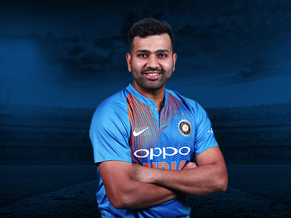
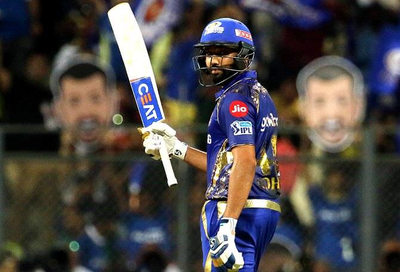

Rohit Sharma: The Hitman
Currently,Rohit Sharma a is the Best Opening Batsmen in the world.
About the Hitman
Many players have made a great impact in the world of cricket and have served their nation with utmost capabilities. Cricket players are not only recognized inside their own country but also in other parts of the world. When it comes to India, we all know Hockey is the national game, but it is the reality that cricket is played and known most, and every single match that India plays is treated as a festival. Moreover, the credit goes to the players that made it more interesting and unique. This article will discuss the biography of one such Indian cricketer that has immensely impacted Indian cricket's overall success. He is currently one of the finest openers across all the game formats. Let's get deeper into the discussion and explore more about him. Rohit Sharma owns an impressive collection of automobiles. His first automobile was a Skoda Laura, but he currently drives a Toyota Fortuner daily and a BMW X3 on rare occasions. His greatest property is a BMW M5, which he purchased for Rs 1.5 crore. He also has a BMW X3 Formula One model, famous among F1 fans. Apart from Nissan, which he promotes, Rohit also owns a Mercedes and an Audi.
